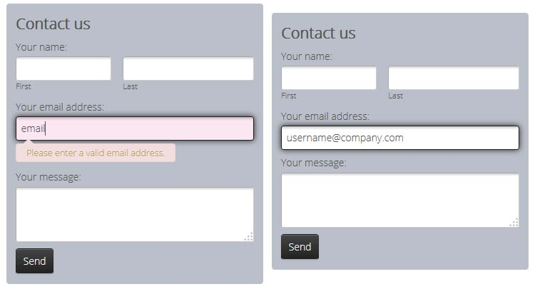

FormBuilder is a free desktop app that helps you easily create
html contact form, html5 contact form, contact form, bootstrap form validation and more in a few seconds without writing a single line of code. Create impressive online forms in just a few clicks.
JQuery is a powerful JavaScript library that allows you to add functionality to your web site, a functionality that cannot be achieved by using only html or css.
There are many things that you can do thanks to jQuery and some of them include – accessing certain parts of the web site and the content of the web site and altering them, adding animation to the web site, reacting on certain impulse from the users of your website, extracting information from the server without reloading the whole page etc.
As you can see using jQuery is a must for those who are looking to create highly responsive and engaging web site. However not all of us have the knowledge of coding and even if we do we don’t have the necessary time to build so-called jQuery forms. These forms are vital part of most of the web sites that can be found on the internet. They are used to recognize user inputs. Some of the most common examples of these forms include sign up/registration forms, login, search boxes. All these elements play a significant role when it comes to user experience. Search engine that works very fast and delivers precise results, registration form that is concise and not very long, login that doesn’t require unnecessary information are all things that can improve the user experience. However, creating such things require much knowledge and time. Web developers are very often annoyed when they had to think about this process. That’s why some of them use jQuery form generators available online. With their help they can produce forms that have suitable layouts. This means that all these elements can be seen properly on every device – desktop, computer, laptop computer, tablets, smartphones etc. Furthermore, they will be able to avoid pointless fields that will only complicate the process.

With the help of these generators they don’t have to worry about jQuery form validation. This means that they will automatically get jQuery form that offers email validation, URL validation, social media profiles validation etc. In addition, these builders have all the answers about how to create a useful jQuery form submit too. Forget all the guides about syntax of submit () methods of jQuery and stick to the software that will ease your job.
When we talk about examples of good jQuery form generators we must mention Formoid. This highly functional jQuery builder can be very helpful for both people that have long-time experience in web design and for people that are starting in this field now.
This tool comes in few themes (Metro, Bootstrap, Flat, Solid) and doesn’t require any GUi coding. You can find many css form styles like CSS radios, selects, checkboxes, date pickers and tooltips. What is really great about Formoid is that it also has a google captcha css form, something that is extremely important for every serious web site. Formoid is highly responsive tool that works with mobile devices and desktop computers too. With the great price and detailed step by step tutorial, Formoid is the perfect solution for all those who are looking for jQuery form builder.